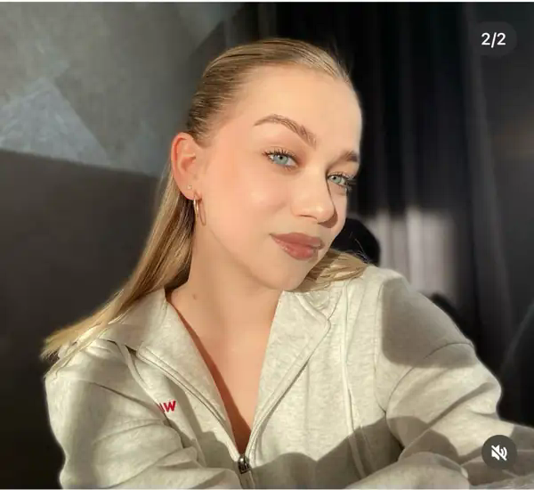

Катя
учитель года по версии этого сайтаодобрено на 5+
📚 Спецвыпуск школьного портала
Катя официально на 5+
Сайт, где школьная бюрократия наконец занялась важным делом: собрала 100 причин, почему лучший учитель заслуживает отдельной страницы.
Милый подкат, одобренный педсоветом
Катя, если бы харизма была школьным предметом, у вас была бы пятёрка без контрольной, пересдачи и даже вопроса у доски.
100комплиментов
5+итоговая оценка
0скучных форм
Личный кабинет → добрые слова
Журнал на 100 записей
Никаких замечаний. Только ясность, терпение, чувство юмора, уважение и умение сделать обычный урок важным.
Сегодня у доски — комплимент № 1
Проверочная работа
Школьные формы, но нормальные
Ничего никуда не отправляется: это шуточные формы, а не новая школьная информационная система.
Контрольная работа № 5+
Заявление директору
* На самом деле никуда не отправляется.
Электронный журнал: итоговая ведомость
| Предмет | Оценка | Комментарий |
|---|---|---|
| Понятные объяснения | 5+ | Без пересдачи |
| Терпение | 5+ | Выше норматива |
| Чувство юмора | 5+ | Разрешено на уроке |
| Харизма | 5+ | Шкала закончилась |
Итоговая: 5+
Катя, спасибо за знания, терпение, поддержку и атмосферу, в которой можно не бояться быть учеником. Хорошего учителя действительно замечают.
«Одобрено на 5+» — художественная формулировка. А все 100 комплиментов — добрые и по делу.